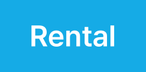
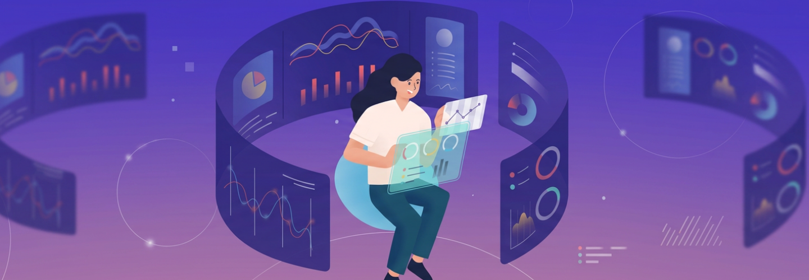

Overview
사업 확장 과정에서 시스템이 분산되면 운영 리스크가 커지고 고객 경험의 일관성이 무너질 수 있습니다. 웅진은 WRMS·SAP ERP·클라우드 기반의 표준화 모델을 통해 국내 지점부터 해외 법인까지 빠르게 연결하고, 일관된 고객 경험을 제공합니다. 또한 금융·보험과 연계된 파이넨탈 서비스를 통해 재무 안정성을 강화하여 글로벌 확장과 브랜드 신뢰도를 동시에 확보합니다.
렌탈 비즈니스의 성공은 렌탈에 대한 깊은 이해도
웅진은 렌탈 비즈니스에 대한 깊은 이해를 바탕으로 국내외 시장을 아우르는 최적화된 IT 솔루션을 제공합니다. 렌탈 사업의 성공은 신속한 확장성과 통합된 시스템 관리에서 시작됩니다. 웅진의 솔루션은 국내 기업뿐만 아니라 해외 진출을 모색하는 기업들에게도 일원화된 프로세스를 제공하며, 비즈니스의 고도화와 글로벌 확장을 지원합니다. 다양한 산업군에 적용 가능한 맞춤형 솔루션으로 기업의 성장 단계에 따라 유연한 확장과 최적화된 시스템 관리가 가능합니다.
글로벌 경쟁력 강화와 브랜드 신뢰도 증대
웅진의 렌탈 관리 솔루션은 소비재, 가전, 건설기계장비, 헬스케어/의료기기, 금융사 렌탈 등 다양한 산업에 적용 가능합니다. 글로벌 시장에서의 확장을 위해 필수적인 통합된 시스템과 유연한 프로세스를 제공하며, 이는 기업이 규모를 확장함에 따라 지속적으로 업그레이드할 수 있는 토대를 마련합니다. 이를 통해 귀사는 안정적인 성장과 함께 글로벌 시장에서의 신뢰를 구축할 수 있습니다.


Features
사업 컨설팅 및 지원
웅진의 렌탈 전문가들은 사업에 맞춘 단계별 구축 방안 및 도입 전략을 제시하며, 렌탈 및 구독 사업의 성공 가능성을 진단하기 위해 전반적인 사항을 분석하여 상황에 맞는 컨설팅을 제공합니다. 기존 솔루션들이 단순히 계약, 수납, 해지의 운영 사이클에 집중하는 것과 달리, 판매하려는 상품의 렌탈 또는 구독 사업 모델의 적정성과 성공 가능성을 초기 단계에서 철저히 분석하여 맞춤형 컨설팅을 제공합니다. 웅진은 단순 운영 사이클을 넘어, 견적부터 주문, 계약, 수납까지 아우르는 렌탈 및 구독사업 모델을 위한 토탈 플랫폼을 제안합니다.
유연한 사업 확장
웅진이 제공하는 렌탈 사업 특화 솔루션은 사업 확장 시 품목 추가 기능 등 간편하게 시스템에 반영할 수 있는 확장성을 가지고 있어 수익성 증진과 확대에 용이합니다. 유니크한 구조로 다양한 산업에 바로 적용 가능한 프로세스를 제공하며, 유연한 사업 확대와 전문 서비스 제공을 통해 대면 및 비대면 영업과 다양한 채널 관리를 지원합니다. 전문성과 기술의 융합으로 렌탈 시장을 단순 구매에서 벗어나 전문 서비스를 제공받을 수 있는 플랫폼으로 진화시킵니다. 각 분야의 특색에 맞춰 빠르게 사업을 확장하고, 프로모션, 교육, 비즈니스 컨설팅까지 제공합니다. 소규모 기업과 벤처기업은 초기 투자 자본과 시간을 절약할 수 있으며, 중단 없는 시스템 확장으로 성공적인 비즈니스 혁신을 가속화합니다.
해외 시장 개척 및 경쟁력 확보
많은 기업들이 웅진과 함께 렌탈 사업의 해외 시장 개척을 도전하였고, 성공을 거두고 있습니다. 미국 뿐만아니라 동남아시아 등 렌탈 사업의 성장 잠재력이 큰 여러 나라에서 활발히 활동하며, 넓은 시장에서 지속적인 성장을 이루고 있습니다. 웅진이 가지고 있는 해외 사업에 대한 이해와 함께 모듈형 솔루션의 선택으로 쉽게 접근할 수 있어 해외 블루오션 시장을 개척이 용이합니다. 이를 통해, 고객의 글로벌 경쟁력을 강화하고, 사업 안정 시 유동성 확보와 더불어 대규모 사업 확장을 지원합니다.